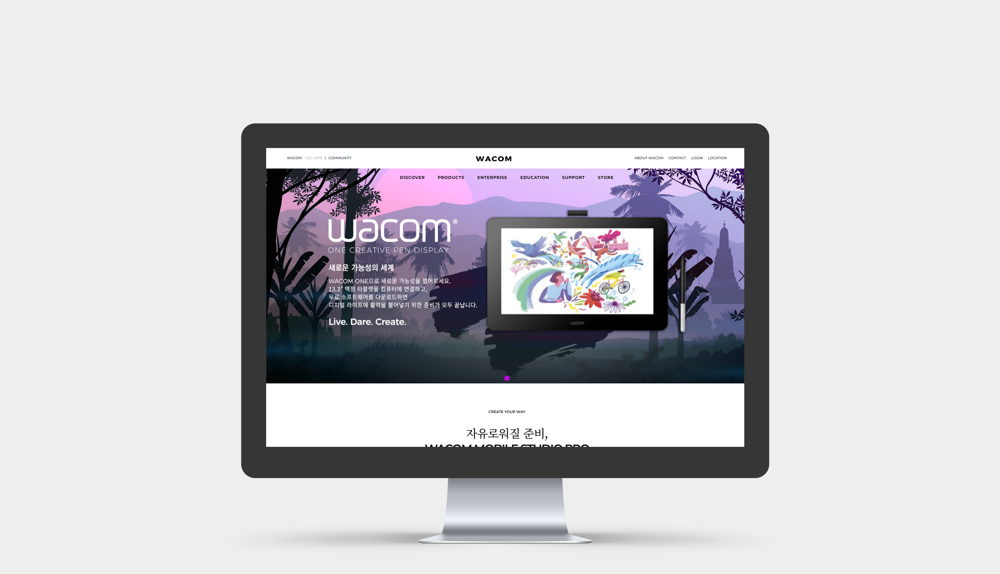

Wacom

PUBLISHING
00 Overview
Wacom 홈페이지 리디자인
그래픽 태블릿 전문 기업 와콤의 홈페이지를 새로 디자인했습니다. 크리에이티브함과 아이디어를 강조하는 기업 이미지에 맞게 일러스트가 들어간 메인 이미지 배너를 크게 하고 이동 없이 한 페이지 안에 주요 기능이 눈에 들어오는 스크롤 형태로 디자인했습니다. 온라인 스토어의 정보를 제공하여 쇼핑몰로서의 정체성도 잃지 않도록 했습니다.
01 Site Information
PC 1440px
Javascript / JSON / Ajex
02 Design
Concept
전문적이고 깨끗한 느낌을 주는 모노톤을 베이스로 크리에이티브함을 약간의 불규칙성으로 표현했습니다. 원본 홈페이지에 사용된 일러스트와 사진의 비비드한 색감을 버리지 않고 악센트로 활용했습니다.
Keyword
CLEAN
CREATIVITY
TECHNICAL
Color
#FFF
#000
#F5F5F5
#C902E4
#17212B
#FFBE1C
Typography
KOR
Noto sans Kr
Noto serif Kr
Cafe24 Ohsquare
ENG
Montserrat (title)
03 Problem & Solution
grid를 사용해 3x3 메인 메뉴를 구현했으나 브라우저 크기를 조절하면 중앙정렬이 되지 않고 메뉴가 화면 왼쪽에 붙는 문제가 있었습니다. grid-template-columns에 fr단위값을 지정해 반응형으로 만들고, grid를 적용한 article에 text-align:center;와 margin:0 auto;를 이용해 중앙 정렬했습니다.
이미지 위에 텍스트를 올리자 브라우저 크기에 맞춰 텍스트가 이미지 밖으로 나가는 문제가 있었습니다. 이미지를 html이 아닌 div 안의 background image 속성을 사용해서 삽입하고 그 안에 텍스트가 들어가는 div를 하나 더 만들어 넣은 뒤 가로값에 %를 지정하는 방법으로 반응형으로 만들어 해결했습니다.
중간 타이틀 아래에 짧은 선을 삽입하고 싶은데 일반적인 border로는 구현할 수 없었습니다. 밑줄을 넣고 싶은 글자에 :after 값을 사용하고 가상의 인라인 요소를 만들었습니다. 원하는 만큼 가로 길이를 입력해 해결했습니다.
04 Review
처음으로 디자인한 사이트입니다. 상단에 스와이퍼를 적용했고 grid를 처음으로 사용해 보았습니다. 스와이퍼에 사용한 이미지는 원본 홈페이지와 SNS에서 사용되던 이미지를 바탕으로 편집하거나 새로 디자인했습니다. 처음부터 원본 사이트와는 완전히 다른 레이아웃을 선택했기 때문에 시행착오가 많았는데, 그 과정에서 실제로 사용되고 있는 홈페이지의 구조를 분석하고 어떻게 정보를 드러내야 할 것인가를 연구할 수 있었기 때문에 어려웠던 만큼 많은 공부가 되었습니다.
화면에 마우스를 올려주세요.